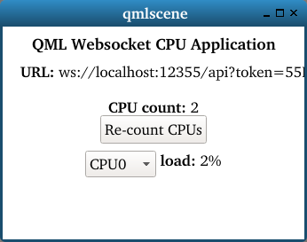
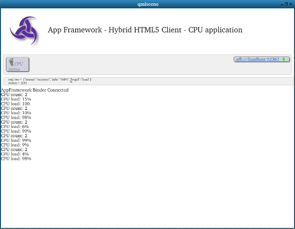

Creating your own hybrid application
In this section, we describe how to extend the provided templates to create a real application that provides information about CPUs: - obtain target CPU count; - obtain target CPU load, by processor; - display results with a graphical interface.
This will consist in 4 main steps:
- get a minimal template, with a default Service;
- extend the Service to add API verbs (cpucount, cpuload);
- add a Qt/QML Application to use and display these verbs results;
- package the new Service/Application couple as a Hybrid Application.
In this section, we get the detailed steps to modify the templates but the result is also available directly in app-framework-templates/demos.
Get the default Hybrid application template
Log into the DevKit container, clone the app-framework-templates
repository (if not already done) and copy the default Hybrid Application
template in the home directory:
$ cd $HOME
$ git clone https://github.com/iotbzh/app-framework-templates
$ cp -a app-framework-templates/templates/hybrid-qml ~/cpu-hybrid-qml
$ cd ~/cpu-hybrid-qml
Rename application, add API verbs to Service
First, rename xxxxxx-hybrid-binding.c to cpu-hybrid-qml-binding.c
$ mv xxxxxx-hybrid-qml-binding.c cpu-hybrid-qml-binding.c
Then in cpu-hybrid-qml-binding.c, line 42, replace xxxxxx by cpu:
.v1 = {
.info = "cpu hybrid service",
.prefix = "cpu",
.verbs = verbs
}
In CMakeLists.txt, line 20, change project name to cpu-hybrid-qml.
```
###########################################################################
project(cpu-hybrid-qml)
cmake_minimum_required(VERSION 3.3) ```
Then, in your text editor, open cpu-hybrid-binding.c and do the
following modifications:
‘cpucount’ verb
At line 18, add required header files:
#define GNU_SOURCE
#include <stdio.h>
#include <unistd.h>
#include <json-c/json.h>
At line 32, add new API verb “CPUCount” function: ``` }
static void CPUCount (struct afb_req request) { long count = sysconf(_SC_NPROCESSORS_ONLN); char count_str[8]; snprintf (count_str, 8, “%ld”, count); afb_req_success(request, NULL, count_str); }
// NOTE: this sample does not use session to keep test a basic as possible ```
At line 47, define new API verb “count”:
{"ping", AFB_SESSION_NONE, ping , "Ping the binder"},
{"count", AFB_SESSION_NONE, CPUCount , "returns number of CPUs on target board"},
{NULL}
The CPUCount() C function uses standard Linux calls to retrieve the
CPU count in a numeric (long) variable, then converts it to a string and
returns it as an argument of the default Binder success function
(afb_req_success(...)).
The function is then associated to the “count” API verb.
‘cpuload’ verb
At line 24, add systemd and <time.h> header files, and some definitions:
```
#include <afb/afb-plugin.h>
#include
const struct AFB_interface *interface; ```
At line 50, add following helper and API functions: ``` }
static char* LookupStringInFile (char *string, char *filename) { FILE *file; char *line;
file = fopen (filename, "r");
line = malloc (256);
/* lookup string on file line, stop there if found */
while (fgets (line, 256, file)) {
if (strstr (line, string))
break;
}
fclose(file);
return line; }
static int MeasureCPULoad (sd_event_source *src, uint64_t now, void *data) { sd_event *loop = (sd_event *)data; char cpuname[6] = “cpu”; char num_str[2]; int num, i; char *line;
/* iterate on each CPU */
for (num = 0; num < cpucount; num++) {
/* construct lookup string ("cpu1" e.g.) */
snprintf (num_str, 2, "%d", num);
strncat (cpuname, num_str, 2);
/* lookup string in file, get current load values */
line = LookupStringInFile(cpuname, "/proc/stat");
sscanf (line, "%*s %Lf %Lf %Lf %Lf", &loadnow[0][num], \
&loadnow[1][num], &loadnow[2][num], &loadnow[3][num]);
free (line);
/* calculate average load by comparing with previous load */
load[num] = ((loadnow[0][num]+loadnow[1][num]+loadnow[2][num])
- (loadpast[0][num]+loadpast[1][num]+loadpast[2][num])) /
((loadnow[0][num]+loadnow[1][num]+loadnow[2][num]+loadnow[3][num])
- (loadpast[0][num]+loadpast[1][num]+loadpast[2][num]+ \
loadpast[3][num]));
/* store current load values as previous ones */
for (i = 0; i < 4; i++)
loadpast[i][num] = loadnow[i][num];
}
/* re-fire the function in 5 seconds ("now" + 5 microseconds) */
sd_event_add_time (loop, &src, CLOCK_MONOTONIC, now+5000000, 0,
MeasureCPULoad, loop);
return 1; }
static void CPULoad (struct afb_req request) { const char *num_str = afb_req_value (request, “num”); int num; char load_str[4];
/* no "num" argument was given : fail */
if (!num_str)
afb_req_fail (request, "failed", "please provide CPU number as \
argument");
/* prevent negative number, or superior to CPU count */
num = atoi (num_str);
if ((num < 0) || (num >= cpucount)) {
afb_req_fail (request, "failed", "invalid CPU number argument");
return;
}
/* convert load to readable format and return it */
snprintf (load_str, 4, "%.0Lf%%", load[num]*100);
afb_req_success(request, NULL, load_str); } ```
At line 133, define new API verb:
{"count", AFB_SESSION_NONE, CPUCount , "returns number of CPUs on target board"},
{"load", AFB_SESSION_NONE, CPULoad , "returns designated CPU load on target board"},
{NULL}
};
At line 149, initialize static variables and callbacks in the Service registration function: ``` const struct AFB_plugin *pluginAfbV1Register (const struct AFB_interface *itf) { interface = itf; sd_event *loop; sd_event_source *src; uint64_t now; int i;
/* get CPU count, limiting it to MAXCPUS (default : 16) */
cpucount = sysconf(_SC_NPROCESSORS_ONLN);
if (cpucount > MAXCPUS)
cpucount = MAXCPUS;
/* initialize past load to 0 for each CPU */
for (i = 0; i < cpucount; i++)
loadpast[0][i] = loadpast[1][i] = loadpast[2][i] \
= loadpast[3][i] = 0;
/* register the CPU load measuring function, fires immediately ("now") */
loop = afb_daemon_get_event_loop (interface->daemon);
sd_event_now (loop, CLOCK_MONOTONIC, &now);
sd_event_add_time (loop, &src, CLOCK_MONOTONIC, now, 0,
MeasureCPULoad, loop);
return &plugin_desc; } ```
This example is slightly more complicated, and illustrates more advanced concepts: - getting argument strings from the request; - initializing variables, launching custom functions at startup; - using the Binder event loop with callbacks.
Some remarks on the code:
- Our new load verb will require a num argument matching the CPU
we want to query (“0” for “CPU0”, “1” for “CPU1”…).
For this, we use the afb_req_value() helper function to retrieve
it as a string. If no argument is given, or the argument is invalid
(-1 or 200 for instance), we use the afb_req_fail() helper function
to give an explicit error message.
-
Measuring CPU load effectively consists in comparing 2 load values (past and current) within a certain time interval.
For this, we create a recurring
MeasureCPULoad()function which will re-fire itself every 5 seconds to measure loads and compare it with the former ones. We use thesd_event_add_time()function for this purpose, passing “5000000” for 5 seconds. -
A recurring function needs to be run at least once at startup.
For this, we use the mandatory
pluginAfbV1register()function, run at Binder startup. We initialize CPU count and load variables (cpucount,loadpast[4][...]) and most importantly retrieve the Binder event loop withafb_daemon_get_event_loop()to run our first occurence ofMeasureCPULoad(). It will then run indefinitely.
Add a Qt/QML frontend
We will now create a QML frontend for our service.
The full source code can be found in
app-framework-templates/demos/cpu-hybrid-qml/cpu-hybrid-qml-app.qml.
Let’s copy it into our project and remove old qml file:
$ cp ~/app-framework-templates/demos/cpu-hybrid-qml/cpu-hybrid-qml-app.qml .
$ rm xxxxxx-hybrid-qml-app.qml
The most important bits are the following, line 9:
property string port_str: Qt.application.arguments[1]
property string token_str: Qt.application.arguments[2]
property string address_str: "ws://localhost:"+port_str+"/api?token="+token_str
then later:
WebSocket {
url: address_str
[...]
active: true
}
This forges a WebSocket URL string (2 components, port and token, are
predefined and passed by the Application Framework manager) and passes
it as the url property of our WebSocket widget. The active property
makes sures the connection gets initialized when the application is
launched.
The following code:
Button {
text: "Re-count CPUs"
onClicked: {
verb_str = “count”
request_str = '[' + msgid_enu.call + ',"99999","' + api_str+'/'+verb_str + '", null ]'
websocket.sendTextMessage (request_str)
}
defines a Button widget which, when clicked on, creates a request with
the cpu API and load verb, and sends it.
Finally, the following code
WebSocket {
[...]
onTextMessageReceived: {
var message_json = JSON.parse (message)
var request_json = message_json[2].request
if (verb_str == "count")
count = request_json.info
}
parses the final response as JSON and, if the verb was count,
retrieves the info field which contains the answer (1, 2, 3…).
Package our Hybrid application
Run the following commands:
$ mkdir build; cd build
$ cmake ..
|snip]
$ make
Scanning dependencies of target cpu-hybrid-qml
[ 33%] Building C object CMakeFiles/cpu-hybrid-qml.dir/cpu-hybrid-qml-binding.c.o
[ 66%] Linking C shared module cpu-hybrid-qml.so
[ 66%] Built target cpu-hybrid-qml
Scanning dependencies of target widget
[100%] Generating cpu-hybrid-qml.wgt
NOTICE: -- PACKING widget cpu-hybrid-qml.wgt from directory package
[100%] Built target widget
The package cpu-hybrid-qml.wgt is then produced in the build directory
and ready to be installed and run on the target.
Install our Hybrid application on the target
Copy the package to the target board:
$ scp cpu-hybrid-qml.wgt root@$BOARDIP:~/
Then open a new session on the target and install the package:
$ ssh root@$BOARDIP
$ afm-util install cpu-hybrid-qml.wgt
{ "added": "cpu-hybrid-qml@0.1" }
Next, run the application:
$ afm-util start cpu-hybrid-qml@0.1
11
The following UI appears and displays the number of CPUs and the load for the selected CPU, updated every 5 seconds:

Add a HTML5 frontend
We will now create a HTML5 frontend for our service.
For this, we will re-use the layout of the HTML5 template found in
app-framework-templates/templates/hybrid-html5.
The most noticeable steps are the following:
- duplicate the template app-framework/templates/hybrid-html5 to a new
directory ~/cpu-hybrid-html5
- copy cpu-hybrid-qml-binding.c to
~/cpu-hybrid-html5/binding/cpu-hybrid-html5-binding.c and remove
the previous binding code
- in CMakeLists.txt, line 20, rename xxxxxx-hybrid-html5 to
cpu-hybrid-html5, and line 64, rename xxxxxx-hybrid-binding.c to
cpu-hybrid-html5-binding.c
- in app/etc/AppDefaults.js, line 24, rename xxxxxx-hybrid-html5 to
cpu-hybrid-html5
- in package.json, line 2, rename xxxxxx-hybrid-html5 to
cpu-hybrid-html5
‘cpucount’ verb
Open app/Frontend/pages/SampleHome/SampleHome.html and, at line 19,
replace:
```
with:
Open `app/Frontend/pages/SampleHome/SampleHome.js` and, at line 51, replace:
scope.RefreshSession = function() { console.log (“RefreshSession”); AppCall.get (“xxxxxx”, “ping”, {/query/}, scope.OnResponse, scope.InvalidApiCall); } ```
with:
scope.CpuCount = function() {
AppCall.get ("cpu", "count", {/*query*/}, scope.OnResponse, scope.InvalidApiCall);
}
then at line 29, replace:
case 'PING':
break;
with:
case 'COUNT':
// Get CPU count from response
var cpucount = jresp.request.info;
Notification.success ({message: "CPU count: " + cpucount , delay: 3000});
break;
We first associate a HTML button with the CPUCount() function found in
the JavaScript code. Then, in the JavaScript code, we make this function
use the AppCall.get helper function to fire the cpu/count request.
The response will then be parsed in the generic OnResponse() function,
where the verb is converted uppercase (count -> COUNT). And then, the
response info field containing CPU count will be displayed on the
page.
‘cpuload’ verb
Open app/Frontend/pages/SampleHome/SampleHome.js and, at line 33, add:
Notification.success ({message: "CPU count: " + cpucount , delay: 3000});
// Iterate and fire CPU load request for each CPU
for (var i = 0; i < cpucount; i++) {
AppCall.get ("cpu", "load", {num: i}, scope.OnResponse, scope.InvalidApiCall);
}
break;
Then at line 39, add:
case 'LOAD':
// Get CPU load from response
var cpuload = jresp.request.info;
Notification.success ({message: "CPU load: " + cpuload , delay: 3000});
break;
Now that we have the CPU count number, we can iterate on it to fire one
load request per CPU (cpu/load {num:0}, cpu/load{num:1} …).
Then, as we did before, we parse the response and display its result on the page.
Package our hybrid HTML5 application
In config.xml.in, line 2, replace xxxxxx-hybrid-html5 with cpu-hybrid-html5.
Then, prepare the directory for gulp processing:
$ npm install
[snip]
Then, run the following commands:
$ mkdir build; cd build
$ cmake ..
|snip]
$ make
Scanning dependencies of target cpu-hybrid-html5
[ 33%] Building C object CMakeFiles/cpu-hybrid-html5.dir/binding/cpu-hybrid-html5-binding.c.o
[ 66%] Linking C shared module cpu-hybrid-html5.so
[ 66%] Built target cpu-hybrid-html5
Scanning dependencies of target widget
[100%] Generating cpu-hybrid-html5.wgt
[snip]
[100%] Built target widget
A cpu-hybrid-html5.wgt installable package will be produced in the
current directory.
Install our Hybrid application on the target
Copy the package to the target board:
$ scp cpu-hybrid-html5.wgt root@$BOARDIP:~/
Then open a new session on the target and install the package:
$ ssh root@$BOARDIP
$ afm-util install cpu-hybrid-html5.wgt
{ "added": "cpu-hybrid-html5@0.1" }
Next, run the application:
$ afm-util start cpu-hybrid-html5@0.1
12
The following UI appears:

Each time the user hits the “CPU” button, CPU count and loads are displayed.